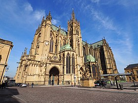

- 상테티엔 대성당
- 텅쁠르 너프
- 오페라
상테티엔 대성당 소개

메스 대성당 (Metz Cathedrale)은 스태인드글라스의 보물창고(寶庫)
메스 대성당 (Metz Cathedrale)은 생테티엔(Saint-Etienne) 대성당으로 불리기도 하는데,
높이 8m의 첨탑이 있는 이 성당은 13∼16세기의 고딕양식 건축물로 유럽의 성당 중에서도
아름다운 성당에 손꼽힌다, 성당 내부 높이는 42m로 엄청 높으며,
특히 성당 벽면을 거의 다 채우다시피 하고 있는 6,500평방미터나 되는 스테인드글라스가 장관이다.
몇 백 년에 걸쳐 많은 예술가가 만든 화려하고 영롱한 스테인드글라스 중에는,
특유의 푸른색 배경에 몽환적 분위기가 나는 샤갈의 작품도 있다.
드래곤이 와서 불태운적이 있음 그래서 메스의 상징중 하나는 드래곤